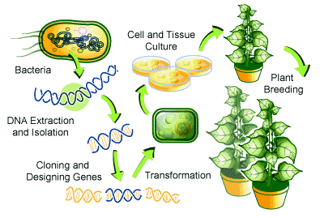

Why Were GMOs Created?
GMOs were created to improve farming and food production. They help increase crop yields, resist pests and diseases, and tolerate herbicides, reducing the need for chemicals. This innovation was designed to address global challenges like food security, environmental sustainability, and nutritional deficiencies.
How GMOs Work
Genetic modification involves altering an organism's genetic material by adding, deleting, or changing segments of its DNA. This process allows scientists to introduce specific traits that wouldn't occur naturally in the species.

The process of creating genetically modified plants involves several steps including DNA extraction, gene design, transformation, and plant breeding.
Pros and Cons of GMOs
Potential Benefits
- More nutritious food with enhanced vitamin content
- Tastier food with improved flavor profiles
- Disease- and drought-resistant plants that require fewer environmental resources (such as water and fertilizer)
- Insect-resistant plants that allow less use of pesticides
- Increased supply of food with reduced cost and longer shelf life
- Faster growing plants and animals to improve production efficiency
- Food with more desirable traits, such as potatoes that produce less of a cancer-causing substance when fried
Potential Concerns
- Changes in plant-biotic environment interaction:
- Persistence and invasiveness
- Selective advantages or disadvantages
- Transfer of genes to wild relatives
- Interactions with target organisms (e.g., induction of resistance in pests)
- Interactions with non-target organisms (e.g., effects on bees and biodiversity)
- Interactions with soil ecosystem and biogeochemical effects
- Changes in plant-abiotic environment interaction:
- Alterations in Greenhouse Gas Emissions
- Variations in sensitivity to climatic effects
- Modifications in sensitivity to soil abiotic factors (salinity, minerals, etc.)
- Potential harm to human or animal health:
- Toxicological effects
- Allergenicity
- Changes in nutritional value
- Transfer of antibiotic resistance
Controversies and Issues
- Creation of foods that can cause an allergic or toxic reaction
- Unexpected or harmful genetic changes
- Inadvertent transfer of genes from one GM plant or animal to another plant or animal not intended for genetic modification
- Foods that are less nutritious
- Decrease in biodiversity